Projects
Creative coding
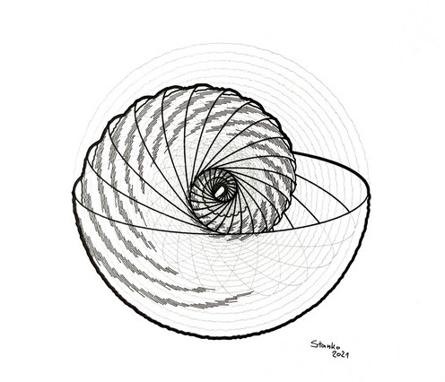
My favorite hobby. I use code to create drawings, and a robot to plot them on paper. Check the art section of this website.
Since early 2024, David, Sinan and myself organize monthly meetups for anyone fascinated by creative coding.
Glitchy B.A.R.D. is an experiment in robot poetry. It uses a small language model to generate crappy poems for fun and profit (I lied, there is no profit).
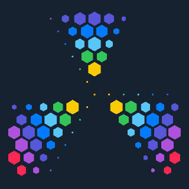
A micro creative coding playground where you can create and share animations through code.
A tool that converts photos into vectors using two unique "shaders" - circular dot grid and variable-width spiral.
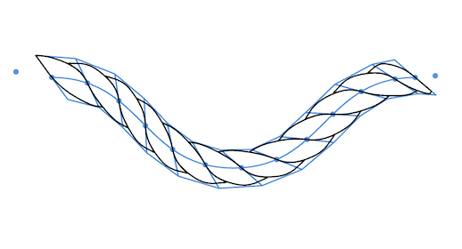
An interactive article on how to transform any SVG path into a vector rope drawing.
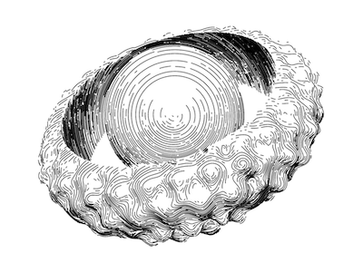
A custom ray marching 3D renderer that mimics hand hatching. It is using SDFs for modeling and outputs vector files. Not published yet.
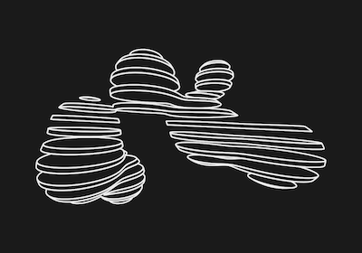
One of my earliest generative projects, based on metaballs, organic-looking n-dimensional objects.
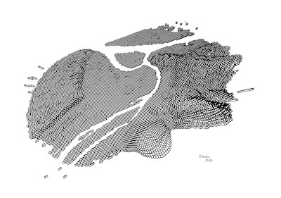
Unfinished port of Michael Fogleman's `ln` vector 3d engine to TypeScript.
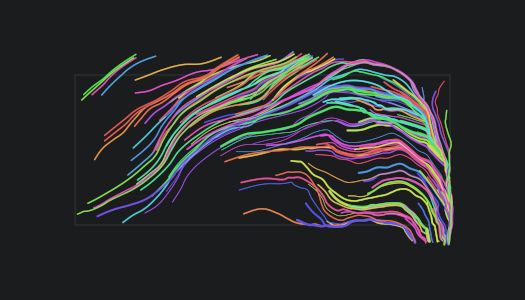
My first remotely presentable generative project, utilizing a vector field to draw vibrant, neon lines.
Hardware
Libraries and tools
Tailor is a developer tool that simplifies inspecting spacings on websites. Available as a browser extension and as a library.
Lightweight React component for animating height using CSS transitions. By far, it is my most popular library on npm.
Lightweight yet robust parallax library for React. It animates numerical CSS properties and colors.
Lightweight *scroll to* function with a powerful API. Scrolls window or any other DOM element.
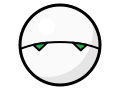
React application boilerplate that gained popularity within the community before React Create App became a thing. The project was born from my blog post series on setting up a React project from scratch.
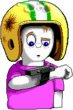
Minimal project setup for building and releasing npm packages.
Small CSS framework I created for my personal needs, a decade ago. Designed as a lightweight alternative to frameworks like Bootstrap. I started working on v2 recently, but I have not set a release date.
Everything else
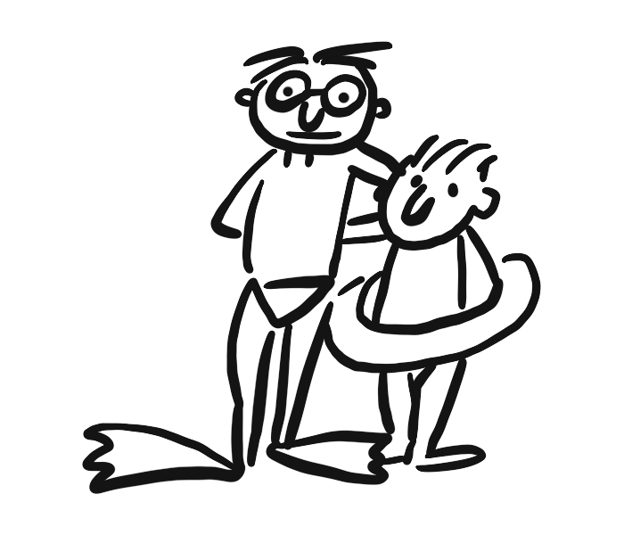
Very personal project - a web adaptation of the book *Letters From Sarajevo*. Our father was stuck in Sarajevo during the war and still sent us funny, positive letters filled with drawings.
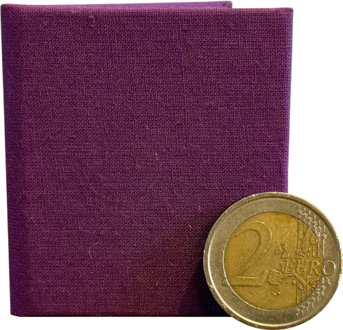
A tiny, hand-crafted book I made my wife using AI, a pen plotter and 3D printer.
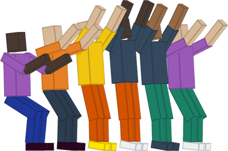
Small code experiments made for Work&Co's weekly code challenge.